pt cm
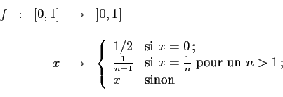
est bijective.
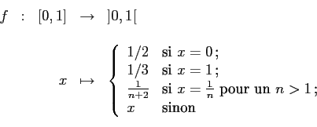
est bijective.
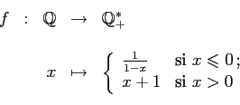
est bijective.
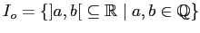
.Soit
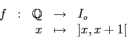
Comme  est injective, on a que
est injective, on a que
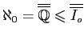
.Posons
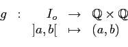
Comme
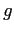
est injective, on a que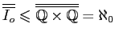
.Donc,
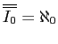
.
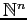
est dénombrable.On procède par récurrence sur
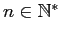
. Pour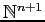
l'est aussi. On a que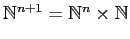
. Comme et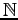
sont tous deux dénombrables et que le produit cartésien de deux ensembles dénombrables est dénombrable, on en déduit que est dénombrable.Donc, est dénombrable pour tout .
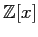
est dénombrable.Posons
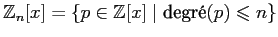
. Soit
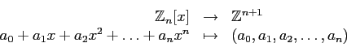
Il est clair que  est une bijection. Donc,
est une bijection. Donc,
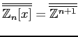
. Or, un raisonnement analogue à celui de la partie a) permet de montrer que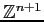
est dénombrable. Il en va donc de même de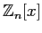
.Comme
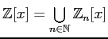
est une réunion dénombrable d'ensembles dénombrables, on en conclut que est dénombrable.
Soit
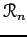
l'ensemble des racines réelles de polynômes de . Comme chaque polynôme de possède au plusOr,
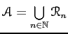
est une réunion dénombrable d'ensembles dénombrables. On en conclut donc que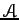
est dénombrable.
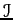
n'est pas dénombrable.
Soit  l'inclusion canonique des irrationnels dans les
réels. Comme
l'inclusion canonique des irrationnels dans les
réels. Comme  est injective, on en conclut que
est injective, on en conclut que
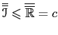
.
D'autre part, si jamais
 était dénombrable, on
aurait que
était dénombrable, on
aurait que
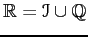
serait la réunion de deux ensembles dénombrables et serait par le fait même dénombrable, ce qui est absurde. Donc,
Soit  l'inclusion canonique des nombres transcendants dans les
réels. Comme
l'inclusion canonique des nombres transcendants dans les
réels. Comme  est injective, on en conclut que
est injective, on en conclut que
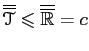
.D'autre part, si jamais
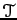
était dénombrable, on aurait que serait la réunion de deux ensembles dénombrables (voir partie c) et serait par le fait même dénombrable, ce qui est absurde. Donc, n'est pas dénombrable.
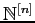
est dénombrable.Soit
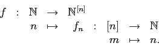
Comme  est injective, on a que
est injective, on a que
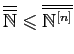
.Posons aussi
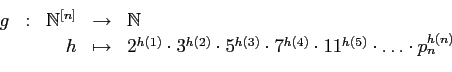
où
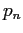
est leComme est injective, on a que
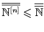
.Donc, est dénombrable.
Soit
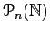
l'ensemble des parties de qui ont au plusSoit
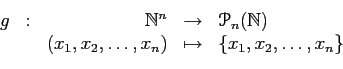
Comme est surjective, on en déduit que
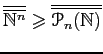
. Or, étant dénombrable en vertu de la partie a), on a que est au plus dénombrable.Puisque
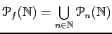
est une réunion dénombrable d'ensembles au plus dénombrables, on en déduit quePrenons enfin
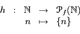
Comme
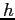
est injective, on a que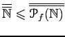
.Donc,
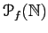
est dénombrable.
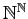
n'est pas dénombrable.Soit
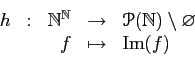
Comme est surjective, on a que
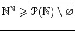
. Or,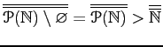
.Donc, n'est pas dénombrable.
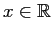
. On a
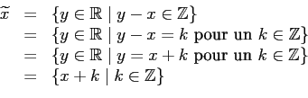
Donc, .
On prétend que chaque classe d'équivalence contient un et un seul élément de l'intervalle réel .
Soient
et
la partie entière
de  . Il est clair que
. De plus,
. Ainsi,
.
. Il est clair que
. De plus,
. Ainsi,
.
Montrons maintenant qu'il n'y a qu'un seul élément dans . Supposons que . Alors, et . Mais alors, . Or, et donnent que .
Posons
On a montré que est bijective. Donc, .
Soit
Comme les intervalles sont disjoints,  est injective et ainsi,
. Donc,
est injective et ainsi,
. Donc,  est au plus dénombrable.
est au plus dénombrable.
Soit
Comme les disques sont disjoints,
est injective et ainsi,
. Donc,  est au plus dénombrable.
est au plus dénombrable.
Comme est une réunion dénombrable d'ensembles dénombrables, on en déduit que l'ensemble des suites finies d'entiers naturels est dénombrable.
Posons
Comme  est injective, on a que
d'où
.
est injective, on a que
d'où
.
Donc, .
où
est le centre du cercle  et
en est le rayon. Comme
et
en est le rayon. Comme  est bijective,
on a que
.
est bijective,
on a que
.
où
est le triangle dont les sommets sont les
points
,
et
. Comme  est
injective, on a que
.
est
injective, on a que
.
Sur , on définit la relation par
lorsque .
Soit
où est la classe d'équivalence contenant les coordonnées des trois sommets de .
Alors,  étant injective, on que
étant injective, on que
.
Donc, .
Puisque  est injective, on a que
.
est injective, on a que
.
Soit aussi
Comme est injective, on a que et ainsi, .
Donc, .
Soit . Du numéro 7a), on conclut que .
Comme
, chaque
point de  doit se retrouver dans au moins un des
. Or,
de la définition de
doit se retrouver dans au moins un des
. Or,
de la définition de  , on tire que chaque
contient au
plus deux points de
, on tire que chaque
contient au
plus deux points de  . Il faut donc au moins
droites pour couvrir
. Il faut donc au moins
droites pour couvrir  . On en déduit que
, ce qui est une contradiction au
fait que
. On en déduit que
, ce qui est une contradiction au
fait que  soit dénombrable.
soit dénombrable.
Donc, ne peut être une réunion dénombrable de droites.
Montrons que . Supposons au contraire que . Alors, est une réunion dénombrable d'ensemble au plus dénombrable et est par conséquent au plus dénombrable, ce qui est bien sûr une absurdité. Donc, .
Soit
Comme  est injective, on a que
.
est injective, on a que
.
Donc, .
On prétend que est injective. En effet, si sont telles que , alors pour tout , c'est-à-dire que pour tout . En vertu du rappel, et est injective.
On a donc .
D'autre part, l'application
est clairement injective et ainsi, .
Donc, .
D'autre part, l'application étant injective, on a que .
Donc, .
Tout nombre  de
de
 possède un développement décimal
.
possède un développement décimal
.
Soit
Comme  est injective, on a que
.
est injective, on a que
.
Donc, .
Soit
. Définissons sur
la relation
par
si et seulement si
ou bien encore si  et
et  sont tous deux dans
sont tous deux dans  . On montre facilement que
est une relation d'équivalence.
. On montre facilement que
est une relation d'équivalence.
Posons
Comme est injective, on a que d'où .
Donc, .
où
Comme est surjective, on a que .
Soit maintenant
. Il est clair que
est une
partition de
 en trois sous-ensembles.
en trois sous-ensembles.
Comme , on a que d'où , c'est-à-dire .
Donc, .